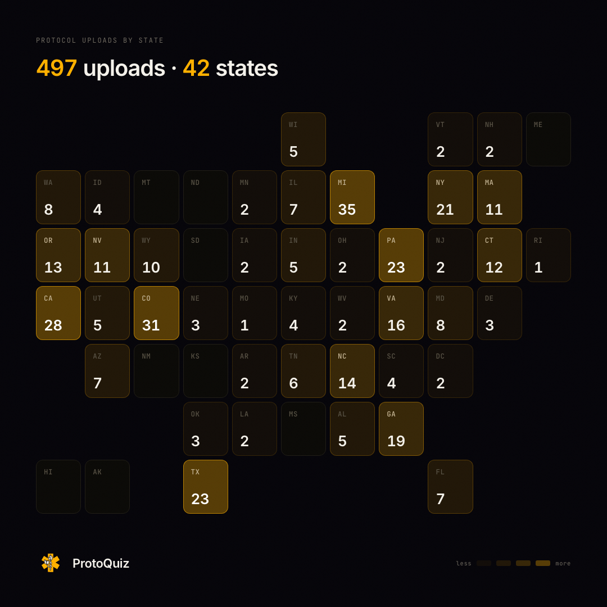
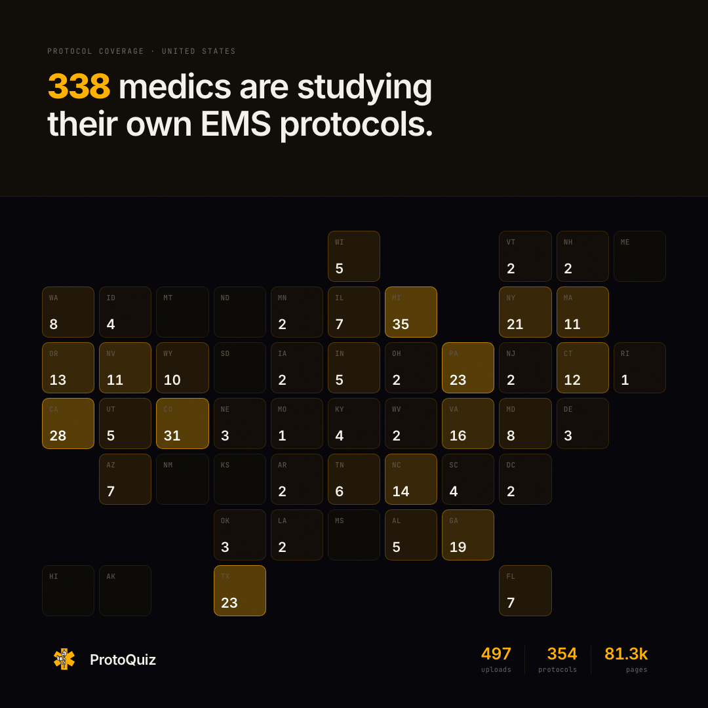
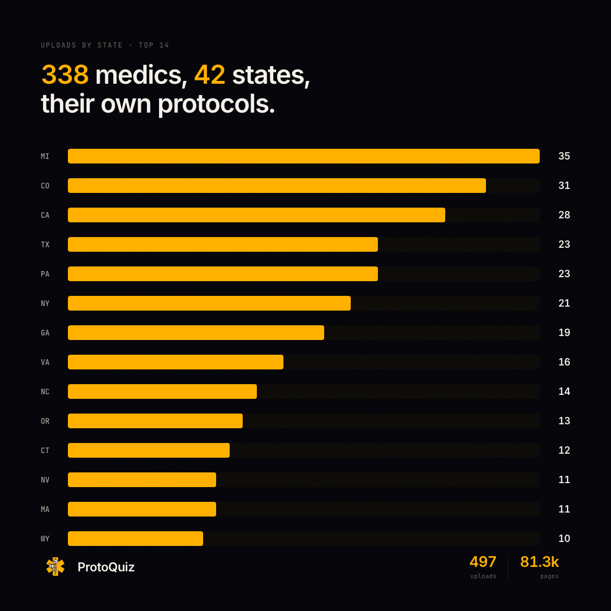
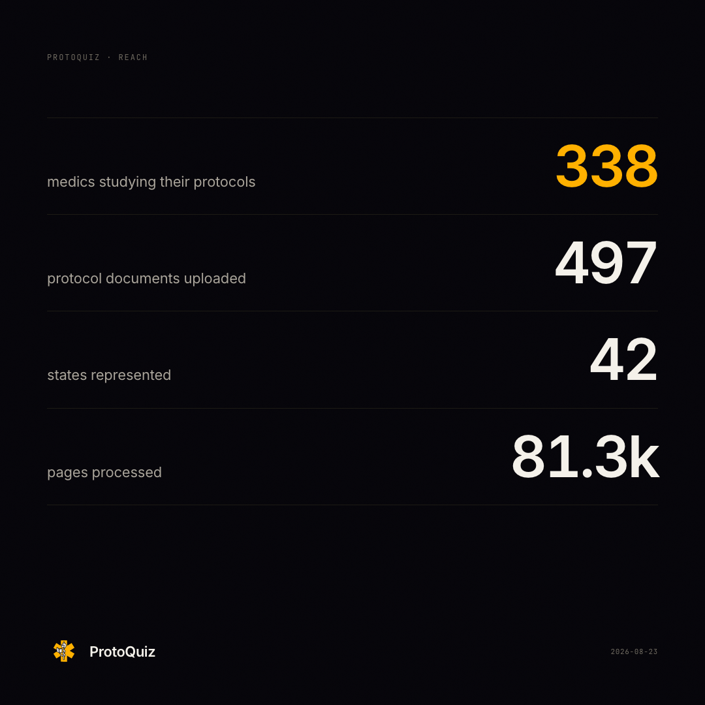
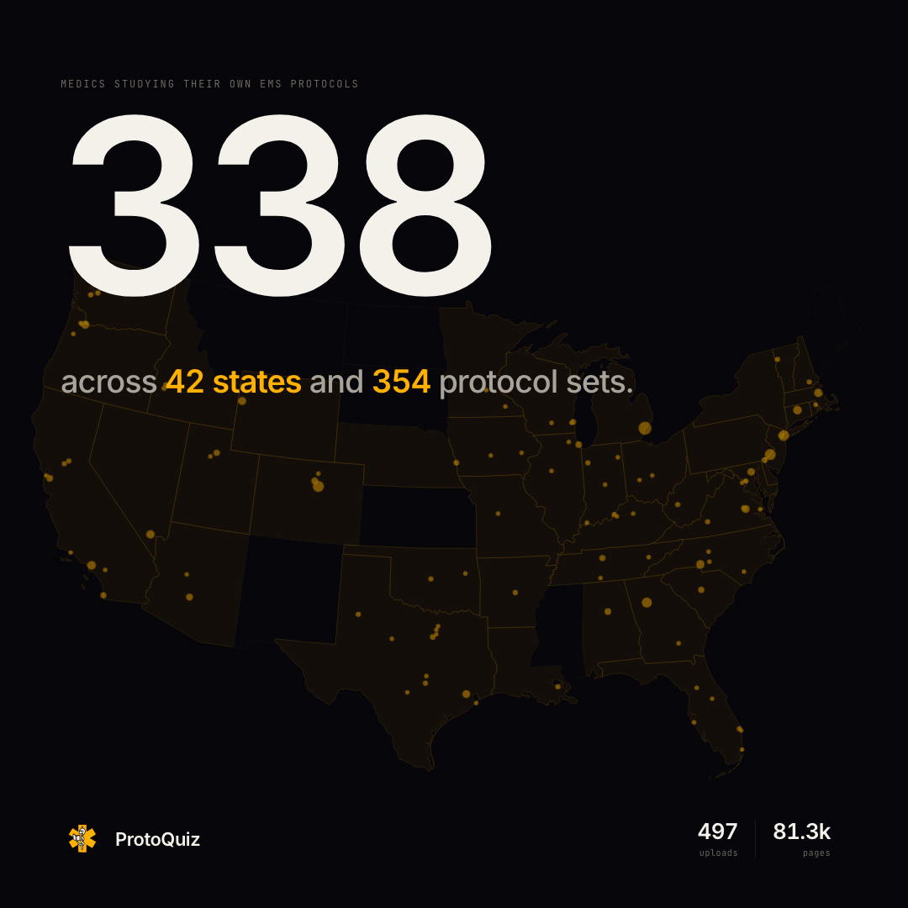

Reach graphic — directions
338 studying · 497 uploads · 42 states · live data 2026-08-23

tileXL
State grid as the whole graphic. Every state equal-area with its real number.

split
Claim on a raised panel, grid below. Product-surface read.

bars
Ranked bars. Tells "which states lead" — a story a dot map cannot.

stack
No map. Four numbers at scale on hairline rules. Fastest read.

hero
One number huge, map reduced to faint texture. Campaign poster.